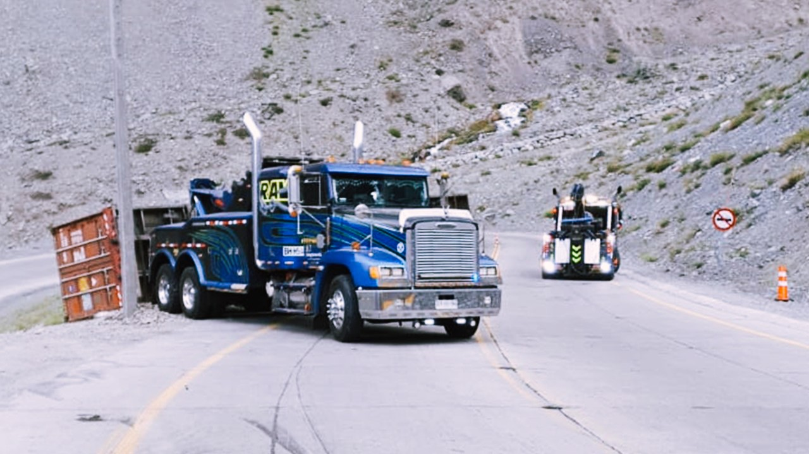
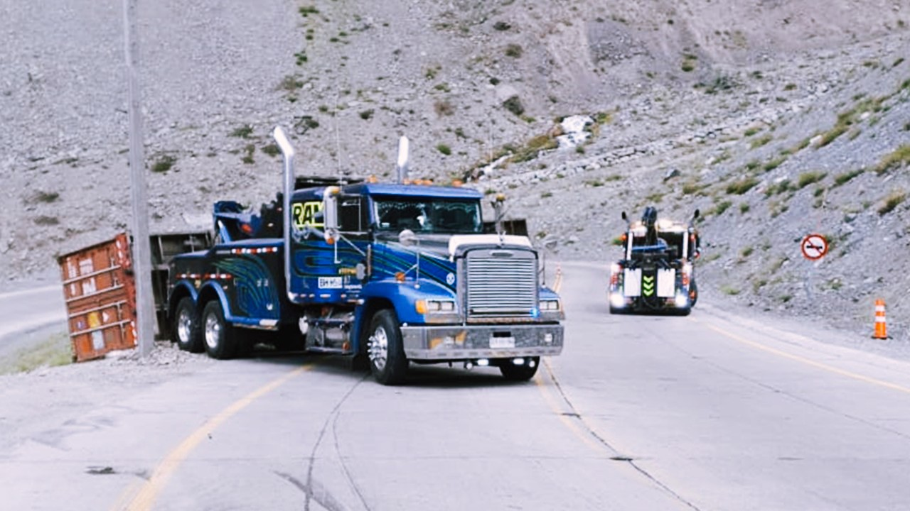

Nuestros Trabajos
Rescate en Alta Montaña
Se necesitaron dos grúas de alto tonelaje para levantar un camión con remolque contenedor de 40 pies y evitar que cayera aún más por un barranco.
La complejidad de este rescate radicó en el riesgo inminente de que la carga completa cayera por el precipicio, haciendo aún más difícil su rescate.
El clima de alta montaña y la ubicación en plena curva del accidente fueron factores sumados a nuestra experiencia.
- Ubicación: CAMINO A FARELLONES
- Vehículo: CAMIÓN CON REMOLQUE
- Fecha: 05-05-20
 

RESCATE EN CARRETERA
Con dos grúas capaces de levantar un camión pesado con remolque fue posible rescatar esta unidad de la zanja a la que cayó.
Los rescates en carretera siempre conllevan una presión extra debido a la necesidad de despejar las vías para mantener el flujo vehiculo en movimiento.
Es en estos casos cuando la experiencia acumulada aporta a una recuperación rápida y segura.
- Ubicación: RUTA 5 SUR KM 680
- Vehículo: CAMIÓN VOLVO FM
- Fecha: 10-07-20
Rescate en Curvas Mortales
Este camión con tolva se desbarrancó debido a las condiciones climáticas lluviosas que convirtieron un camino de tierra en uno de barro.
Un equipo de rescate compuesto solo por dos operadores bastaron para que con sus grúas, herramientas y habilidades, este camión volviera al camino.
Sin embargo, el trabajo aún no terminaba. Posteriormente fue necesario bajarlo de la montaña por un camino de curvas y pendientes para entregarlo a su dueño: un cliente satisfecho.
- Ubicación: REGIÓN DE LA ARAUCANÍA
- Vehículo: CAMIÓN CON TOLVA
- Fecha: 15-10-20